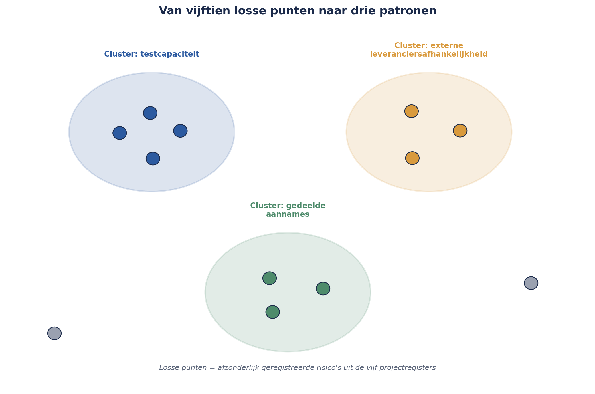

Cursus Risicomanagement · Niveau 2 (M_o_R 4/IRM) · Deel 17 van 30
Optellen mag niet. Clusteren wel.
Sinds deel 13 staat een vraag open: wie is eigenaar van een risico dat niet bij één project hoort, maar in de ruimte ertussen ontstaat? En kun je de risicoscores van vijf projectregisters gewoon optellen tot een programmabreed beeld? Het antwoord op de tweede vraag is nee — en de reden waarom niet, is dezelfde reden die de eerste vraag beantwoordt: risico's die schijnbaar los van elkaar staan, delen vaker een gemeenschappelijke oorzaak dan het register laat zien.
6secties
±2uleestijd + werkboek
4controlevragen
3oorzaakclusters §17.2
Positionering. Deze cursus is een voorbereiding op M_o_R 4 Practitioner (PeopleCert) en het IRM International Certificate in ERM (Institute of Risk Management), en uitdrukkelijk geen vervanging van het officiële examenmateriaal van die instanties. Controleer bij inschrijving altijd het actuele aanbod, de kosten en de examenvorm bij PeopleCert, het IRM of uw opleider zelf; informatie in dit materiaal is geverifieerd in augustus 2026 en kan wijzigen.
Niveau 2: 11 M_o_R 4: van project naar de hele onderneming → 12 Risicobereidheid, -capaciteit en toleranties → 13 Identificatie op programmaschaal → 14 Kwantitatief I: verwachtingswaarde, beslisbomen, drie-puntsschattingen → 15 Kwantitatief II: Monte Carlo-simulatie → 16 Bow-tie-analyse: oorzaken, gevolgen en barrières die je test → 17 Geaggregeerd risico en risico in verschillende leveringsmodellen (hier) → 18 IT- en cyberrisico → 19 Rapportage en besluitvorming → 20 Risicocultuur en gedrag → 21 De risicofunctie inrichten → 22 Examentraining en capstone: de geaggregeerde verdediging
01
De vraag die vijf delen heeft opengestaan
⏱ 8 min
Sinds deel 13 staat er een vraag open: wie is eigenaar van een risico dat niet bij één van de vijf projecten van het Mutatieplatform hoort, maar in de ruimte ertussen ontstaat? De API-datum-kwestie tussen Project 1 en Project 2. De sequencing tussen Project 3 en Project 5. Het gedeelde leveranciersrisico tussen Project 1 en Project 4, waarvan de bow-tie in deel 16 liet zien dat de gevolgen zich over twee projecten verspreiden.
Er is nog een tweede, verwante vraag die net zo lang is blijven liggen: kun je de risicoscores van de vijf projectregisters gewoon bij elkaar optellen om een programmabreed risicobeeld te krijgen? Het korte antwoord, zoals dit deel laat zien, is nee — en de reden waarom niet, is dezelfde reden die de eigenaarsvraag beantwoordt.
02
Waarom optellen niet mag
⏱ 16 min
Drie redenen, elk voortbouwend op een eerder deel van deze cursus.
Ordinale schalen optellen is net zo problematisch als ze vermenigvuldigen. Matrixvalkuil 1 uit deel 5 (niveau 1) liet zien dat kans 5 × impact 1 en kans 1 × impact 5 dezelfde rekenkundige score opleveren, ondanks compleet verschillende risico's. Datzelfde probleem keert terug, versterkt, als je vijf van zulke scores optelt: een programmabrede "totaalscore" van 60 zegt niets zinvols over of dat vijf risico's van elk 12 zijn, of één risico van 40 en vier van 5 — en die twee situaties vragen fundamenteel andere aandacht.
Optellen negeert gemeenschappelijke oorzaken. Als drie van de vijf projectrisico's — schijnbaar onafhankelijk gescoord — in werkelijkheid allemaal voortkomen uit dezelfde onderliggende oorzaak (bijvoorbeeld de capaciteitskrapte bij het testteam uit deel 16), dan telt een simpele optelling die oorzaak drie keer mee als los risico, terwijl het in werkelijkheid één risico is met drie zichtbare symptomen. Dit vertekent het beeld in twee richtingen tegelijk: het overdrijft de totale hoeveelheid risico én het onderschat hoe geconcentreerd de blootstelling werkelijk is.
Kernzin 11 van de cursus
Risicoscores optellen zonder naar gemeenschappelijke oorzaken te kijken, verbergt precies het risico dat het meest telt — dat meerdere dingen tegelijk misgaan, om dezelfde reden.
Optellen negeert correlatie. Dit is de kwantitatieve versie van hetzelfde probleem, al uitgewerkt in deel 15: de Monte Carlo-simulatie liet zien dat de staart van de verdeling (de kans op een werkelijk slecht scenario) dunner wordt zodra je correlatie tussen P1 en P4 negeert. Een simpele optelling van vijf onafhankelijk behandelde risico's doet precies dat — ze onderschat hoe vaak "alles tegelijk misgaat".
Controlevraag
Uit Werkboek deel 17, Opdracht 17.1 — Waarom niet optellen?
1Een collega stelt voor om een "programmarisicoscore" te berekenen door simpelweg de scores van alle risico's in alle vijf projectregisters bij elkaar op te tellen. Leg de drie bezwaren tegen deze aanpak uit, elk met een korte verwijzing naar het deel waar het bezwaar vandaan komt.Toon antwoord
(1) Ordinale schalen optellen is onbetrouwbaar — net zoals vermenigvuldigen van ordinale kans- en impactschalen tot schijngelijke scores voor fundamenteel verschillende risico's leidt (matrixvalkuil 1, deel 5, niveau 1), levert optellen van zulke scores een totaal op dat niet zinvol te interpreteren is. (2) Gemeenschappelijke oorzaken worden genegeerd — als meerdere geregistreerde risico's in werkelijkheid uit dezelfde onderliggende oorzaak voortkomen, telt optellen die oorzaak meerdere keren mee als losse risico's (Kernzin 11). (3) Correlatie wordt genegeerd — zoals de Monte Carlo-simulatie in deel 15 liet zien, onderschat het behandelen van risico's als onafhankelijk de kans op gelijktijdige tegenslag. Alle drie de bezwaren komen uiteindelijk neer op hetzelfde: een simpele optelling doet alsof risico's onafhankelijke, losstaande grootheden zijn, terwijl de werkelijkheid vol samenhang zit die juist het belangrijkste te vertellen heeft.
03
Gemeenschappelijke-oorzaakanalyse
⏱ 16 min
De remedie is niet "helemaal niet aggregeren", maar bewust op zoek gaan naar gemeenschappelijke oorzaken vóórdat je iets probeert samen te vatten. Dit is in essentie een uitbreiding van de escalatiefactoren uit deel 16, nu toegepast op het hele programmaregister in plaats van op individuele bow-ties.
De praktische techniek: neem alle risico's uit de vijf projectregisters plus de acht programmarisico's uit deel 13, en groepeer ze niet naar project, maar naar onderliggende oorzaak. Bij het Mutatieplatform levert dit drie clusters op die eerder niet zichtbaar waren:
Cluster "testcapaciteit": vier afzonderlijk geregistreerde risico's (bij Project 2, Project 3, en de escalatiefactor uit deel 16) blijken allemaal terug te voeren op dezelfde onderliggende oorzaak — een structureel tekort aan ervaren testers, gedeeld over het hele programma.
Cluster "externe leveranciersafhankelijkheid": het conversierisico bij Kadera Software (niveau 1), het gedeelde communicatieplatform-risico (deel 13 en 16), en een nieuw gesignaleerd risico bij Project 2's database-leverancier — drie risico's, één onderliggend patroon: Meridiaan heeft voor kritieke onderdelen van het Mutatieplatform stelselmatig één externe partij per component, zonder uitwijkmogelijkheid.
Cluster "gedeelde aannames zonder gezamenlijke toetsing": de API-datum-kwestie en twee vergelijkbare, nieuw gevonden situaties tussen andere projectparen.

Figuur 17-1 — een netwerkdiagram van losse risico's uit de vijf projectregisters, met drie omcirkelde clusters die eerder onzichtbaar waren.
Dit clusteren is het eigenlijke werk van geaggregeerd risicomanagement — niet het optellen van getallen, maar het blootleggen van patronen die de afzonderlijke projectregisters, elk gebonden aan hun eigen grens, niet konden laten zien.
Controlevraag
Uit Werkboek deel 17, Opdracht 17.2 — Clusteren naar oorzaak
1Vijf risico's uit verschillende projectregisters: (a) "testfase loopt uit door onvoldoende testers", (b) "kwaliteitscontrole overgeslagen door personeelstekort", (c) "leverancier X levert twee weken te laat", (d) "leverancier X kan de gevraagde capaciteit niet garanderen voor een tweede opdracht", (e) "de teamleider is overbelast door gelijktijdige betrokkenheid bij twee andere programma's". Groepeer ze in clusters op basis van plausibele gemeenschappelijke oorzaak.Toon antwoord
Cluster "testcapaciteitstekort": a en b — beide wijzen op een gedeeld tekort aan testers/kwaliteitscontrole-capaciteit over projecten heen. Cluster "afhankelijkheid van leverancier X": c en d — beide betreffen dezelfde externe partij, wat wijst op een concentratierisico (zie §17.3) naast een gemeenschappelijke oorzaak. Los, geen duidelijk cluster op basis van de gegeven informatie: e — tenzij nader onderzoek uitwijst dat overbelasting van sleutelpersonen een breder patroon is, in welk geval dit een derde, apart te onderzoeken cluster zou kunnen worden. Niet elk risico past automatisch in een cluster — clusteren vereist een plausibele, onderzoekbare gemeenschappelijke oorzaak, geen gedwongen indeling.
04
Concentratierisico
⏱ 12 min
Nauw verwant, maar met een net andere invalshoek: concentratierisico is de vraag of te veel blootstelling samenkomt op één punt — één leverancier, één systeem, één persoon, één technologie — ook als elk afzonderlijk risico dat op dat punt is geregistreerd, individueel klein oogt.
Het cluster "externe leveranciersafhankelijkheid" uit §17.2 is in essentie een concentratierisico: geen van de drie afzonderlijke leveranciersrisico's scoort op zichzelf hoog genoeg om alarm te slaan, maar de patroon dat Meridiaan voor drie kritieke, verschillende onderdelen van hetzelfde programma zonder uitwijkmogelijkheid afhankelijk is van één partij per onderdeel, is zelf een risico dat in geen van de drie individuele scores wordt weerspiegeld.
Concentratierisico wordt zichtbaar door expliciet te vragen: als ik één as kies (leverancier, systeem, persoon, technologie) en alle risico's daarlangs sorteer, valt er dan een onevenredige ophoping op één punt? Dit is een aanvullende doorloop, vergelijkbaar met de categorie-gestuurde identificatie uit deel 4 (niveau 1), maar dan toegepast op het geaggregeerde beeld in plaats van op een enkel project.
05
Cross-project escalatie: het eigenaarsvraagstuk opgelost
⏱ 16 min
Terug naar de vraag van §17.0. Het antwoord dat Sanne, in overleg met de Sponsoring Group, voor het Mutatieplatform vaststelt, sluit direct aan bij twee eerdere lessen van deze cursus: het eerste-lijns-principe (deel 9, niveau 1: risico hoort daar te zitten waar het werk gebeurt) en Kernzin 6 (de risicofunctie beslist niet namens een eigenaar).
De oplossing: de Programme Manager — de MSP-rol uit de PM-cursus die de dagelijkse coördinatie van het hele programma draagt — is standaard eigenaar van elk risico dat aan meer dan één project toebehoort. Dit is een bewuste keuze: net zoals een projectmanager eerstelijns-eigenaar is van projectrisico's, is de Programme Manager eerstelijns-eigenaar van programmarisico's. Sanne blijft, ook hier, tweede lijn: zij faciliteert de identificatie (deel 13), bewaakt de kwaliteit van de aggregatie (dit deel), en escaleert wanneer nodig — maar beslist niet namens de Programme Manager welke respons wordt gekozen.
Een aanvullende regel voor de praktijk: als twee projectmanagers gezamenlijk een oplossing kunnen vinden zonder escalatie naar de Programme Manager, mag dat — eigenaarschap door de Programme Manager is de default bij onduidelijkheid of conflict, geen verplichting om elk grensoverschrijdend risico naar boven te trekken.
Figuur 17-2 — beslisboom voor eigenaarschap: één project → projecteigenaar; meerdere projecten met overeenstemming → gezamenlijk eigenaarschap; geen overeenstemming of meer dan twee projecten → Programme Manager, Sanne faciliteert.
Controlevraag
Uit Werkboek deel 17, Opdracht 17.3 — Wie is eigenaar?
1Pas de beslisboom uit Figuur 17-2 toe: een risico tussen Project 1, Project 2 én Project 4 tegelijk, waarbij de drie betrokken projectmanagers het onderling oneens zijn over de te volgen aanpak. Wie is eigenaar, en wat is Sanne's rol daarbij?Toon antwoord
De Programme Manager — meer dan twee projecten betrokken én geen overeenstemming, precies de twee voorwaarden die in §17.4 tot escalatie leiden. Sanne faciliteert dit proces als tweede lijn: zij zorgt dat de juiste vraag bij de juiste persoon op tafel komt (in dit geval: de Programme Manager, gevoed met de drie perspectieven van de projectmanagers), maar kiest niet zelf de respons — precies Kernzin 6 (deel 9, niveau 1) toegepast op programmaschaal.
06
Risico in verschillende leveringsmodellen
⏱ 14 min
Een laatste onderwerp van dit deel, korter behandeld: niet alle vijf projecten van het Mutatieplatform werken volgens hetzelfde leveringsmodel. Project 2 (Verwerkingsengine) werkt volledig agile, met tweewekelijkse sprints; Project 5 (Datakwaliteit en Opschoning) werkt in een meer traditionele, gefaseerde aanpak, vanwege de aard van het werk.
Dit raakt aan ROAM (Resolved, Owned, Accepted, Mitigated), de risicoclassificatie uit de Scrum- en SAFe-wereld. Het punt hier is dat risicomanagement zich moet aanpassen aan het ritme van het leveringsmodel, niet andersom. Voor Project 2 betekent dit dat risico-identificatie is ingebed in elke sprint-planning, terwijl Project 5 met vaste faseovergangen werkt zoals in deel 7 (niveau 1) beschreven — volledige herziening bij elke fase-overgang, niet bij elke sprint.
Het belangrijkste risico dat uit dit verschil zelf voortvloeit: wanneer risico's van Project 2 (continu, licht getoetst) en Project 5 (periodiek, zwaar getoetst) samen in het programmaregister terechtkomen, hebben ze een verschillend "leeftijd"-profiel. Bij het clusteren uit §17.2 is het belangrijk deze asymmetrie te herkennen, zodat een schijnbaar "verouderd" risico van Project 5 niet ten onrechte als minder urgent wordt gelezen dan een "vers" risico van Project 2, puur op basis van hoe recent het voor het laatst is bekeken.
Controlevraag
Uit Werkboek deel 17, Opdracht 17.4 — Leveringsmodel en leeftijdsprofiel
1Een risico van Project 2 (agile, sprints van twee weken) is drie dagen oud; een risico van Project 5 (traditioneel, faseovergangen elke twee maanden) is zes weken oud. Is het risico van Project 5 daarom minder goed onderhouden?Toon antwoord
Niet noodzakelijk. Het verschil in "leeftijd" weerspiegelt een verschil in ritme dat past bij het leveringsmodel van elk project (§17.5), niet per se een verschil in kwaliteit van onderhoud. Project 5's risico kan, gegeven zijn tweemaandelijkse faseovergangscyclus, precies op schema liggen voor de eerstvolgende volledige herziening. De juiste vraag is niet "hoe oud is dit risico in dagen", maar "is dit risico voor het laatst herzien binnen het voor dit project passende ritme?" Dat vereist dat je bij het clusteren en aggregeren het leveringsmodel van elk project kent, en niet een enkele, uniforme leeftijdsnorm toepast over het hele programmaregister.
Samenvattend: risicoscores over projecten heen optellen is problematisch om drie redenen — ordinale schalen optellen is onbetrouwbaar, het negeert gemeenschappelijke oorzaken (Kernzin 11), en het negeert correlatie. Gemeenschappelijke-oorzaakanalyse groepeert risico's naar onderliggende oorzaak en legt clusters bloot die per project onzichtbaar blijven; concentratierisico vraagt of blootstelling onevenredig samenkomt op één punt. Het eigenaarsvraagstuk van deel 13 is opgelost: de Programme Manager is default eigenaar van grensoverschrijdende risico's, met ruimte voor gezamenlijk eigenaarschap tussen projectmanagers als zij het eens zijn. En verschillende leveringsmodellen leveren risico's op met een verschillend "leeftijd"-profiel, dat bij aggregatie zorgvuldig moet worden gelezen.
Verder naar deel 18
Deel 18 introduceert een geheel nieuw, eigen deel: IT- en cyberrisico, met een CRISC-georiënteerde blik en de DORA-mechaniek — het enige onderwerp in deze cursus dat een eigen deel kreeg in plaats van een aanpalende vermelding, precies omdat de digitale afhankelijkheid van het Mutatieplatform-programma daar om vraagt.